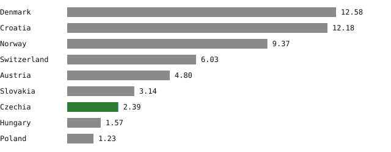

Tool · Player Pool Atlas · Czech footballers in Europe, 1995/96–2025/26
Player Pool Atlas, football: Czech players in Europe's strongest leagues
A descriptive, exploratory atlas of a nation's players in Europe's strongest leagues against eight peers: Czechia ranks seventh of nine per head, and its count in the Big-5 (England, Spain, Italy, Germany and France) fell from 26 in 2007/08 to 6 in 2015/16 and stands at 10.
- players per million, nine strongest leagues, 2025/26
- 2.39 26 players · seventh of nine · administrative count
- Czech players in the Big-5, ≥ 450 min
- 26 → 6 → 10 2007/08 · 2015/16 · 2025/26 · administrative count
- own under-21 share of Czech First League minutes, 2025/26
- 6.4 % a floor, at most 7.6 % · Denmark 15.3 % · administrative count
- a fall in the Big-5 level around 2014/15
- more likely than not posterior probability 0.58 · level ×0.59, 90 % HDI 0.37–1.02, which does not exclude no change
Overwhelmed? Here's the short version
- Czechia has 2.39 players per million in Europe's nine strongest leagues, seventh of nine countries; Denmark has five times that.
- The rank holds with a 450-minute floor; Czechia would need 35 players to move up a place or drop to 17 to move down.
- The Czech Big-5 count fell from 26 (2007/08) to 6 (2015/16) and is 10 now; the model's most probable season for the fall, 2014/15, has probability 0.58, and the size of the fall does not exclude no change.
- Czechia gives its own under-21s the smallest share of home-league minutes of eight countries (6.4 %, at most 7.6 %).
- Everything here is description from counts; it does not show why the Czech count fell. One forecast, for 2026/27, was registered in advance.
Photo: rawpixel · CC0, toned
What the atlas does and comparable work
The atlas asks when Czech presence in Europe's strongest leagues fell and at which stage of the path from a home academy to a foreign top-flight roster Czechia differs from its peers. It answers with counts per head, cohort tables, pathway measures and a map of player profiles, built the same way for six nations and published at football.bsandova.com1. The CIES Football Observatory publishes demographic and migration studies of players and leagues2, and ClubElo and the Opta Power Rankings rate club strength from match results34. The atlas combines a per-nation peer comparison with pathway and squad measures from public data in one reproducible build. It is exploratory and was not pre-registered, apart from one forecast described under Tests: the specifications reported here are the ones in the current build, and a superseded one is listed in the change log.
Method
The pool starts from FBref's page of Czech players, 440 professionals, of whom 192 outfield players played at least 450 minutes in 2025/26 in one of the eighteen leagues with FBref season tables (goalkeepers are counted separately)5. The nine strongest leagues are those ranked 1 to 9 by the UEFA association coefficient (five-year ranking 2022/23–2026/27, as of 14 September 2026): the Premier League, Serie A, La Liga, the Bundesliga, Ligue 1, the Primeira Liga, the Belgian Pro League, the Eredivisie and the Süper Lig6. The per-head measure counts the distinct players of each nationality, by FBref's nationality column, who played in one of these leagues in 2025/26, and divides by Eurostat population7. The long series counts players with at least 450 minutes in the Big-5, the first five of the nine, in every season since 1995/96, for Czechia and sixteen other countries. A local-level model (an average level that drifts a little each season) with two step changes at unknown seasons, fitted in PyMC, dates its breaks: for each season it gives the posterior probability that a step falls there, and for each step a factor by which the level changes.
For the map, every player-season is a vector of five features available in all eighteen leagues with tables: non-penalty goals and assists per 90, share of club minutes, age and cards per 90. Rates are shrunk towards the league-season median with a fixed prior of \(K = 10\) matches, \(\hat r = (\text{events} + K\cdot 90\,\tilde r)/(\text{minutes} + K\cdot 90)\), so that at the 450-minute floor the median carries 67 % of the weight and at 900 minutes half. The vectors are reduced with PCA to the two directions of greatest variation and grouped with K-means into clusters of similar players, once on raw rates (the style projection) and once after multiplying by a league factor: the UEFA coefficient normalised to the Premier League (Serie A 0.856, Bundesliga 0.788, Czech First League 0.434, Slovak Super Liga 0.217), with second tiers at 0.6 of their first tier by assumption (the quality projection)1. A second, independent strength estimate comes from a hierarchical Poisson model of goals plus assists per 90 fitted only on the 2 125 players seen in at least two leagues (8 108 player-seasons, seven seasons from 2020/21 to 2026/27, the last of them in progress at the snapshot), because only a mover's own before and after separates his level from a league's scoring environment.
Worked example: the Czech edition
Czechia has 26 players in the nine leagues, 2.39 per million, seventh of nine countries. Denmark, with about half the population, has five times the density. Czechia would need 35 players to pass Slovakia and would fall behind Hungary only at 17. With a 450-minute floor, Czechia has 23 players (2.11 per million) and the order of the nine is unchanged1.

By cohort the largest gap is among midfielders aged 23 to 25, two Czech players in the nine leagues against a peer median of six, and among defenders under 22 Czechia has none against a peer median of 1.5. These are single-season counts of a few players, and the largest gap is picked from all position-and-age cells after the fact; one or two players more or fewer would reorder the table.
| group | cohort | CZE | peer median |
|---|---|---|---|
| Midfielders | 23–25 | 2 | 6 |
| Midfielders | 26–29 | 3 | 6 |
| Midfielders | 30+ | 1 | 3.5 |
| Defenders | 26–29 | 3 | 4.5 |
| Defenders | U22 | 0 | 1.5 |
Czech players aged 21 or younger get 6.4 % of Czech First League minutes, a floor because FBref leaves some rows without a nationality (at most 7.6 %); the same share for each country's own young players in its league is 15.3 % in Denmark, 14.1 % in Hungary, 14.0 % in Croatia and 11.5 % in Norway, and the league has 1.1 regular under-21 starters (ten or more starts) per club against Denmark's 2.5. The Czech share was 10 % in 2020/21 and 11.1 % in 2024/25; the six-season trend, −0.4 percentage points a season (90 % CI −1.3 to +0.5), does not exclude zero. The first move abroad comes at a median age of 24, against 23 for Denmark and 22.5 for Norway, and the covered seasons hold 32 Czech first moves against Denmark's 112. Of the 192 mapped players, 27 play abroad, 17 of them (63 %) in the nine leagues, and 19 % moved to a league no stronger than the Czech one by its multiplier. The 17 and the 26 above count different things: the 26 include three players under 450 minutes and four goalkeepers, whom the map leaves out, and two players whose longest 2025/26 spell was in the Czech league. Abroad, Czech players keep a median 50 % of their club's minutes, third of nine behind Slovakia (76 %) and Hungary (58 %). Of the 26 players in the Czech squad for the 2026 FIFA World Cup, 35 % play in the nine leagues, against 88 % for Switzerland, 73 % for Croatia, 69 % for Austria and 65 % for Norway18.
The Big-5 series peaks at 26 in 2007/08, falls to 6 in 2015/16 and stands at 10 in 2025/26. The two-break model puts a rise in 2000/01 (posterior probability 0.56, level ×1.67, 90 % HDI 0.74–2.40; the HDI, highest-density interval, is the narrowest range that holds 90 % of the model's probability) and a fall in 2014/15 (0.58, ×0.59, 0.37–1.02); the pair together has probability 0.36. The interval for the size of the fall reaches 1, so the model does not exclude an unchanged level. At the 2007/08 peak the Czech Big-5 players had a median age of 28 and in the season of the fall 32, with no debutant arriving. On the small peers the same model finds no step whose size interval excludes no change. Hungary's most probable step, a rise in 1998/99, has probability 0.78, more than the Czech fall, but its size (×2.77, 0.59–5.27) is too uncertain to call. Croatia's most probable steps, a fall in 2003/04 (probability 0.30, ×0.75, 0.51–1.16) and a rise in 2014/15 (0.27, ×1.31, 0.80–1.69), and Norway's, a fall in 2004/05 (0.26, ×0.67, 0.27–1.39) and a rise in 2021/22 (0.22, ×1.29, 0.37–2.24), all have intervals that include no change. For Slovakia, Austria and Poland both most probable steps are rises, also with intervals that include no change. The fits for Denmark and Switzerland did not pass the convergence rule and date no step15.

The gap to each peer is split into three channels, the under-21 share of home minutes, home-league strength (the mover-based estimate) and the median age at the first top-9 season of players who entered a top-9 league in 2025/26 or 2026/27, with a ridge regression (a regression that shrinks its coefficients, because three channels on eight countries leave little to fit) across the eight countries, Czechia and seven peers, with data on all three and a linear Oaxaca–Blinder split of the fitted gap, which splits each fitted gap into a sum over the channels: the country's difference from Czechia on the channel times the channel's fitted weight. With three channels and eight countries this is an accounting of a correlation. The league-strength coefficient is negative (−56.5 per unit of the multiplier), so a weaker home league goes with more players per million, and Norway and Denmark, whose leagues the movers rate below Czechia's, get positive contributions. The age channel is not the first-move age given above: by the top-9 measure Czechia, Denmark and Norway all have a median of 22, so its contribution is zero by construction, not because age has no association1.
| peer | gap | U21 minutes | league strength | age at first top-9 season | residual |
|---|---|---|---|---|---|
| Norway | +7.0 | +4.2 (1.2–5.9) | +5.1 (1.9–6.8) | 0.0 | −2.4 |
| Denmark | +10.2 | +7.3 (2.2–10.3) | +1.7 (0.6–2.3) | 0.0 | +1.2 |
Across the same eight countries a Bayesian regression of players per million on the under-21 share gives +10.1 per 10 percentage points (90 % HDI −1.7 to +23.3, R² 0.27), an interval that includes zero. Least squares on the country means gives +10.7 (−3.8 to 20.3). A pooled fit on all sixteen country-seasons gives +7.8 (1.1–14.0), but its bootstrap resamples country-seasons as if independent, with no clustering by country, so that interval is too narrow1.

Tests and measured error
The repository holds 317 software unit tests, and every stochastic step uses seed 429. Each league's UEFA multiplier was perturbed by ±20 % in turn, 38 scenarios; in 34 of them nobody enters or leaves the union of the three position groups' top tens, and in the other four one player does. Refitted on earlier seasons, the mover-based strength model predicts the 863 league changes of 2025/26 better than a UEFA-scaled or an unchanged rate, with log predictive density (the average log probability the model gave to what happened; higher is better) −2.17 against −2.73 and −2.63 and mean absolute error 0.127 against 0.151 and 0.137; it samples with no divergences and R-hat ≤ 1.003 (chains that agree). In a rolling backtest over fifteen seasons, a local-level model without the steps misses the next season's Big-5 count by 2.5 players on average against 2.7 for last season's count, and its 90 % interval covers 14 of 15 outcomes. This scores the forecasting method; it does not test the dating of the steps. The same step-free model gave the one registered forecast: on 21 September 2026 it put the Czech Big-5 count for 2026/27 at 11 (90 % interval 5–18), to be scored after 30 June 2027 against last season's 10. Refitted on the longer and corrected series it now says 11 (5–19); the registered numbers stand. The data-quality log records every decision that changed a count: 92 women's entries dropped from the country page by surname, 2 namesakes separated by club, 125 professionals in leagues without season tables listed by name only, 441 split-season rows merged after transfers, and 18 call-up names that match no row1.
Limits
The counts measure presence, not quality, and they are single-season snapshots. The peer comparisons rest on eight countries, too few for the regression and the gap split to be more than descriptive. The two league-strength estimates disagree in places: their rank orders correlate at Spearman 0.74 over eighteen leagues, Hungary's NB I is sixth by the movers and seventeenth by UEFA, and the Czech First League is worth 0.67 of a Premier League season by the movers (90 % HDI 0.59–0.75) against 0.434 by UEFA. The two measure different things, players who moved and the clubs' European results, and the atlas does not reconcile them; the gap split uses the mover-based figure. ClubElo, planned as a third source, was unreachable at run time. FBref has no Slovak league tables, so Slovakia is missing from the youth-minutes panel. Women's entries are removed by a surname rule that can misclassify. The Czech pool is found through FBref's country page, while peers are counted by the nationality column, so the Czech figures and the peer figures come from slightly different routes.
Install and reproduce
From a clean clone, uv sync && make restore-snapshot && make render rebuilds the report from the committed snapshot without network access, and make test runs the tests9. The live atlas is at football.bsandova.com, and the editions are compared on its Nations page.
References
- Šandová, B. (2026). Player Pool Atlas · football, Czech edition, with editions for Denmark, England, Spain, Germany and Norway, the Nations page and the methodology (multipliers, shrinkage, sensitivity, league strength, break model, youth panel, gap decomposition, data-quality log). football.bsandova.com. Accessed 29 September 2026.
- CIES Football Observatory. Demography and migration studies. football-observatory.com. Accessed 29 September 2026.
- ClubElo. Football Club Elo Ratings. clubelo.com. Accessed 29 September 2026.
- Opta Analyst. Opta Power Rankings. theanalyst.com. Accessed 29 September 2026.
- FBref player season tables (standard, playing time) via soccerdata: the nine strongest leagues, the Czech First League, peer top flights and the German second tier for 2020/21–2026/27, the last season in progress at the snapshot (Norway from 2022/23); the "Players from Czechia" country page; Big-5 tables 1995/96–2025/26 for the long series. fbref.com. Snapshot committed 14 September 2026 (Big-5 history 22 September 2026).
- UEFA men's association coefficients, five-year ranking 2022/23–2026/27, via Wikipedia. en.wikipedia.org/wiki/UEFA_coefficient. Snapshot committed 14 September 2026.
- Eurostat. Population on 1 January 2024, table
demo_pjan(Czechia 10.90 million). ec.europa.eu/eurostat. Values as used in the atlas configuration, 14 September 2026. - Wikipedia squad tables: 2026 FIFA World Cup squads, 2024–25 UEFA Nations League, 2026 World Cup qualification, UEFA Euro 2024 and the 2025 UEFA European Under-21 Championship, matched on normalised name and birth year. en.wikipedia.org/wiki/2026_FIFA_World_Cup_squads. Snapshot committed 14 September 2026.
- Šandová, B. (2026). czefootball-player-pool-atlas, v0.1.0. Software, github.com/sandovabarbora/czefootball-player-pool-atlas, commit
43c9217, MIT. PyMC 5.
Change log
- 3 October 2026, after an audit: the Big-5 data behind fig. 2 (big5.json) is the corrected count of 1 October, so the interactive chart's counts change by one or two in a few seasons (Czechia 2009/10 19 instead of 18) and its model outputs to fall probability 0.58, rise probability 0.56 and forecast 11 (5–19); the static fallback still shows the earlier render, as the caption says. The code is pinned to commit 43c9217 instead of e449f1e, which did not produce the 1 October numbers. Corrected: Hungary's minutes share 58 % instead of 57 %; eighteen leagues with season tables instead of nineteen; the 192 are outfield players; the UEFA ranking is the five-year ranking 2022/23–2026/27, not 2025, and the nine leagues are listed in coefficient order; the mover model's seven seasons run to 2026/27, which was in progress, and the data reference says so, with Norway from 2022/23. Withdrawn: "alone among small peers its Big-5 count fell without recovering" and the dated Croatian and Norwegian falls and recoveries, now given with their probabilities and intervals, all of which include no change, with Denmark and Switzerland undated; the replacement line "dates nothing firmly" was itself withdrawn, because Hungary's 1998/99 rise has probability 0.78 (size ×2.77, 0.59–5.27), and is now about the size intervals. Weakened: the backtest is credited to the step-free model it was run on, not to the break model; the 29 September entry wrongly listed the forecast 11 (5–18) as superseded, and it is restored as the one registered forecast; the 6.4 % youth share is given as a floor (at most 7.6 %) with its six-season trend (−0.4 points a season, 90 % CI −1.3 to +0.5); the age channel of the gap split is named as the measure it uses (median 22 for Czechia, Denmark and Norway; column now "age at first top-9 season") and the negative league-strength coefficient (−56.5) is stated; the largest cohort gap is said to be picked after the fact from small counts. The short version, the deck and several terms (local-level model, posterior probability, PCA, K-means, ridge, regular starter, log predictive density, R-hat, Spearman) were rewritten or explained, and the methodology link fixed. No other number changed.
- 3 October 2026: after a reader's review, the description and facts card no longer date the Big-5 fall to 2014/15 as a fact; the disagreement between the two league-strength measures and the Oaxaca–Blinder split are explained; HDI is explained at first use. No number changed.
- 14 September 2026: first published as "When did the train leave, and who else missed it".
- 29 September 2026, version 2: reframed as a tool page (exploratory, not pre-registered) and retitled. The nine strongest leagues are now listed with their UEFA ranking year. Correction: the per-head measure was described as counting players with at least 450 minutes, but the atlas counts every player who appeared in 2025/26; the numbers are unchanged, and a check with the 450-minute floor (Czechia 23 players, 2.11 per million, same order) and the swing needed to change Czechia's rank (35 or 17 players) were added. The 26 per-head players and the 17 of 27 mapped players abroad are now reconciled. The page reports one break model, the two-break model the atlas now runs, with the 90 % interval of each step, and the rise is given as ×1.65 (1.648 in the atlas output) instead of ×1.66; the superseded one-step results (2014/15 at 62 %, ×0.57 (0.38–0.86), backtest error 2.8 against 2.7, coverage 0.87, forecast 11 (5–18) for 2026/27) were removed, and the backtest is reported from the current model (2.5 against 2.7, 14 of 15 covered). A sentence that called the Big-5 series "the top-9 leagues" was removed. The gap split is reported once, as a table with all three channels, the residual and bootstrap intervals; Denmark's youth-minutes contribution is corrected from +7.4 to +7.3 (7.35 in the atlas output), and the shares (73 %, 72 %) were dropped because the channels do not sum to the gap. The pooled least-squares interval is now described as unclustered, and the fit on country means (+10.7, −3.8 to 20.3) was added. Removed as policy advice drawn from descriptive data: the paragraph on what is "within reach" and the reading of the German and English academy reforms as a "lever", with their figures (5 % to 11 % by 2009/10, 3 % to 6 % by 2019/20). Also removed: the six-season changes in Big-5 presence for Norway, Denmark and Czechia (+2.7, +2.3, −0.1 per million), the model comparison (RMSE 0.0706, 0.0713, 0.0754; 91.6 % coverage; 8 850 test pairs), the paragraph on the other editions' pool sizes (443, 511, 1 047, 932), the build-process paragraph (23 rulings) and the 17-card count. The 317 tests are labelled as software tests. The fig. 1 caption now names the rendered colours and says the render starts in 2000/01. References renumbered, merged (the FBref Big-5 tables join the FBref entry) and given access or snapshot dates; related work added. Seasons written as 2014/15 throughout. The sensitivity check is reported over the 38 single-league perturbations (34 without change, four with one player) instead of 41 scenarios (37), which counted the unperturbed baseline and the two uniform-scaling runs that cannot change a ranking. The youth-minutes share is described as each country's own under-21 players, as the atlas computes it, and the eight-country regressions no longer call Czechia a peer.
- 29 September 2026: figures only, no sentence of the text or number changed. The per-head bars, the Big-5 series and the midfielder atlas are interactive charts drawn from the atlas's data, with the static renders kept as fallbacks; the bars became fig. 1, so the Big-5 series is now fig. 2 and the atlas fig. 3. Tables and figures sit in the text column. The Big-5 title shows its range as 2000/01–2025/26 instead of a missing glyph; Denmark and Croatia are drawn in black. The atlas is coloured by the rung of each player's league instead of by K-means cluster.
- Checked against editorial standard v1 on 29 September 2026.
- 1 October 2026: the break model was refitted under a convergence rule (four chains, 2000 draws) and on the corrected Big-5 count, which now sums a player's minutes across clubs. The rise is now ×1.67 (90 % HDI 0.74–2.40, posterior 0.56) instead of ×1.65 (0.87–2.46, 0.55), and the fall ×0.59 (0.37–1.02, posterior 0.58) instead of ×0.60 (0.39–1.03, 0.56); the seasons are unchanged. The header now shows one line of metadata, with the rest under "About this tool", and a shorter summary.